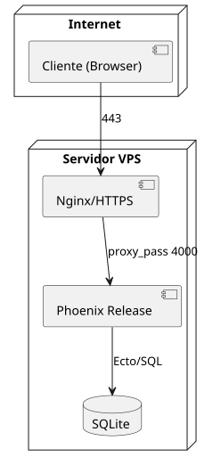

Selección de Servidor
Requerimientos y supuestos
-
Tráfico: 10k transacciones/día, pico 100k/día.
-
Nivel de presupuesto: medio.
-
El proyecto debe correr en localhost (mínimo) y luego desplegable.
Alternativas evaluadas (alto nivel)
| Alternativa | Pros | Contras | Cuándo usar |
|---|---|---|---|
VPS único (Hetzner, DO, Vultr) |
Bajo costo, control total, fácil systemd y Nginx |
Escalado manual, HA limitada |
MVP, presupuesto acotado |
PaaS (Fly.io, Render) |
Despliegue fácil, escalado sencillo |
Costos variables, cold starts (algunos planes) |
Cuando prima simplicidad de DevOps |
K8s (GKE/EKS/AKS) |
Escala/HA excelente |
Complejidad y costo altos |
No recomendado para MVP académico |
Opción propuesta (MVP)
-
VPS único con:
-
Nginx como reverse proxy (TLS, HTTP/2)
-
Phoenix release (mix release) como servicio systemd
-
SQLite en disco local (requisito curso)
-
Certbot (Let’s Encrypt) o Cloudflare Full (Strict)
-
Arquitectura (simplificada):

Despliegue (pasos clave)
-
Build release:
MIX_ENV=prod mix release -
Service: unit systemd que ejecute
{_build/prod/rel/game_store/bin/game_store start} -
Nginx:
proxy_pass http://127.0.0.1:4000;+ TLS. -
Variables entorno (secret_key_base, host, etc.).